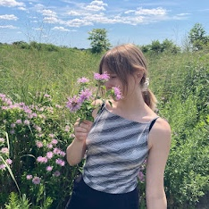

Enora
Hello! My name is Enora and I am a PhD candidate in Computer Science at CU Boulder, where I work in the NALA lab and LECS lab, advised by Alexis Palmer and Katharina von der Wense. In 2025–2026, I was a visiting researcher at Carnegie Mellon's Language Technologies Institute. I received my bachelor's degree from Bryn Mawr College in 2022 with a double major in computer science and linguistics.
I work on natural language processing for low-resource and marginalized languages. My research builds computational tools for language documentation, uses machine learning to study typological variation across languages, and investigates how multilingual models represent relationships among languages. I pair modeling work with user studies, so that the tools I build fit the workflows of the linguists who use them.
In my free time, you can find me at the media archaeology lab, picking apples with the community fruit rescue, or sewing clothes with materials found at art parts. Check out what I am currently reading.

Selected Publications
- Morris Alper*, Enora Rice*, Bhargav Shandilya*, Alexis Palmer, and Lori Levin. CWoMP: Morpheme Representation Learning for Interlinear Glossing. EMNLP 2026 (to appear).
- Michael Ginn, Lindia Tjuatja, Enora Rice, Ali Marashian, Maria Valentini, Jasmine Xu, Graham Neubig, and Alexis Palmer. Massively Multilingual Joint Segmentation and Glossing. ACL 2026. Outstanding Paper Award.
- Enora Rice, Katharina von der Wense, and Alexis Palmer. Interdisciplinary Research in Conversation: A Case Study in Computational Morphology for Language Documentation. EMNLP 2025.
- Enora Rice, Ali Marashian, Hannah Haynie, Katharina von der Wense, and Alexis Palmer. Untangling the Influence of Typology, Data, and Model Architecture on Ranking Transfer Languages for Cross-Lingual POS Tagging. LM4UC Workshop 2025.
- Enora Rice, Ali Marashian, Luke Gessler, Alexis Palmer, and Katharina von der Wense. TAMS: Translation-Assisted Morphological Segmentation. ACL 2024.
* Equal contribution
Updates
- 08/20/26 CWoMP accepted to EMNLP 2026
- 07/07/26 Massively Multilingual Joint Segmentation and Glossing received an Outstanding Paper Award at ACL 2026
- 5/18/26 Started machine learning internship at Pinterest
- 4/29/26 Successfully defended my dissertation proposal on Automating Linguistic Annotation for Very Low-Resource Languages
- 12/02/25 Won the Nelson A. Prager Family and James H. Martin Endowed Graduate Fellowship
- 11/07/25 Presented Interdisciplinary Research in Conversation: A Case Study in Computational Morphology for Language Documentation at EMNLP 2025
- 05/27/25 Started as a visiting researcher at Carnegie Mellon's Language Technologies Institute
- 05/04/25 Presented Untangling the Influence of Typology, Data, and Model Architecture on Ranking Transfer Languages for Cross-Lingual POS Tagging at LM4UC 2025